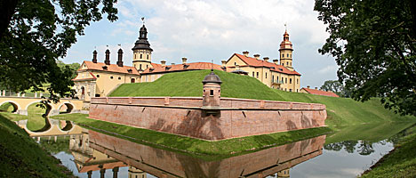

ЗАДАНИЕ 2
Наследие юнеско в Беларуси
ВСТУПЛЕНИЕ
Беларусь вошла в состав ЮНЕСКО в 1954 году и на протяжении многих лет поддерживает с этой международной организацией плодотворные, динамичные отношения. С помощью ЮНЕСКО в нашей стране реализуется множество интересных проектов в сфере образования, науки, информации, коммуникаций и, безусловно, культуры.
ИНФОРМАТИВНАЯ ЧАСТЬ
В октябре 1988 г. Беларусь присоединилась к Конвенции по охране всемирного культурного и природного наследия, принятой ЮНЕСКО в 1972 г. И сегодня уже 4 объекта, находящихся на территории нашей страны, включены в Список всемирного наследия ЮНЕСКО.
Первым из них в 1992 году стал Национальный парк "Беловежская пуща" (объект природного наследия) – уникальный заповедный лес Европы, охраняемый еще с XIV века.
ИЗОБРАЖЕНИЕ. Несвижский замок.

© Гапанович Дарья Олеговна